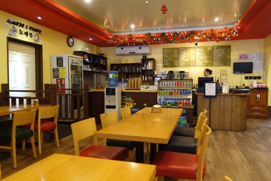

Saipan's Must Try Restaurants
Food is something you always must experience when you travel, so in this article, I would like to give you my top picks on where to dine when you are visiting Saipan.
Best Places to Dine:
- Zoom Cafe
- Shirley's Coffee Shop
- Mango Six
- Etc
- Etc
Zoom Cafe | Susupe, Saipan
Zoom Cafe is a great place to try some local food. They have a variety of dishes to choose from, and their staff is very friendly.
What I Love:
- Their chicken wings
- Not too expensive
- Their Karoke Room